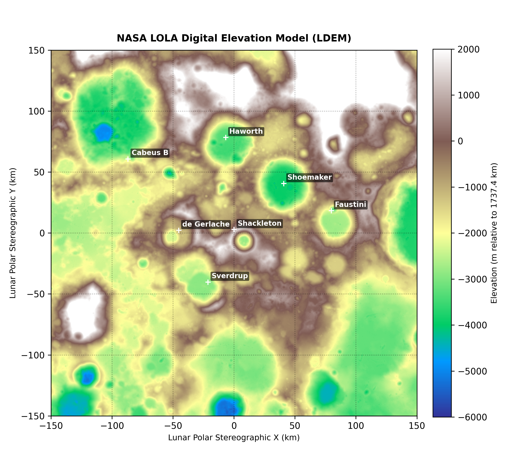
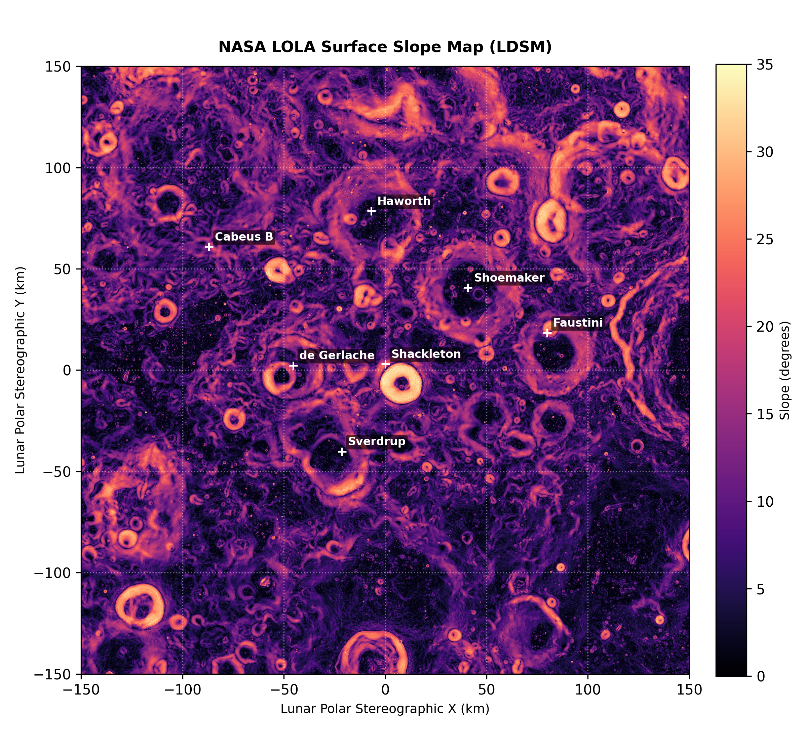
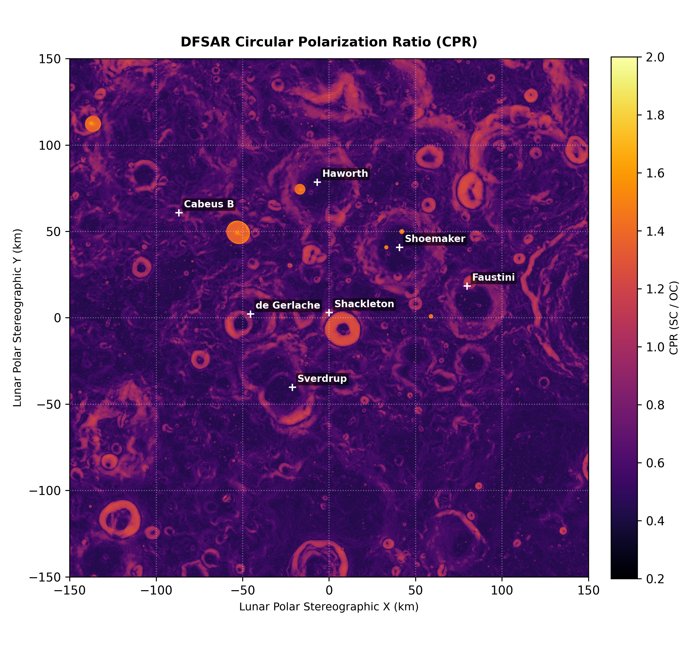
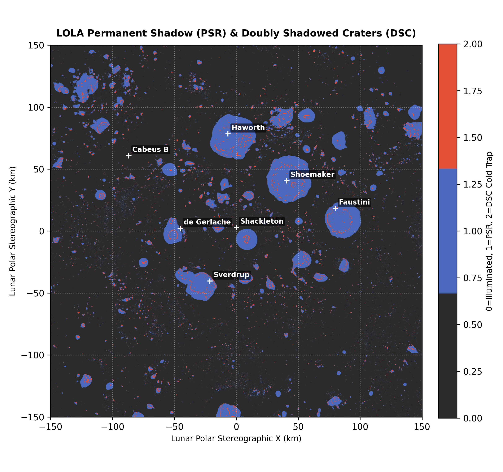
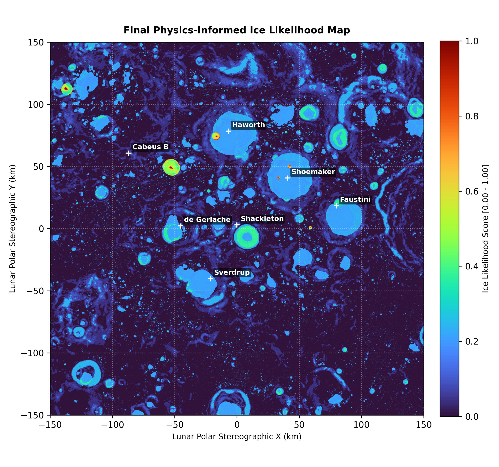
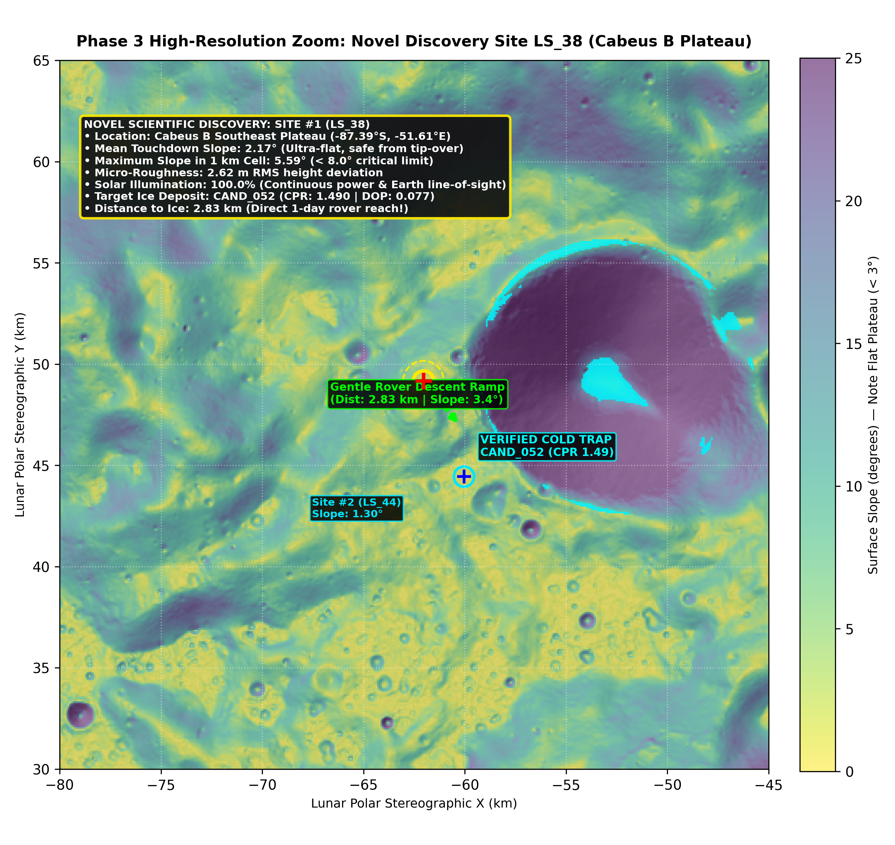
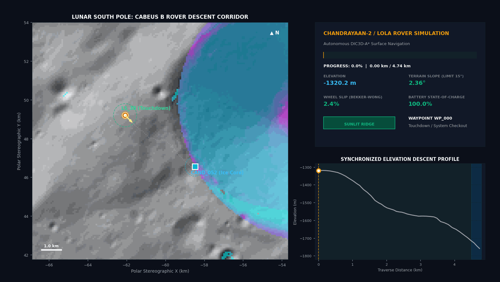
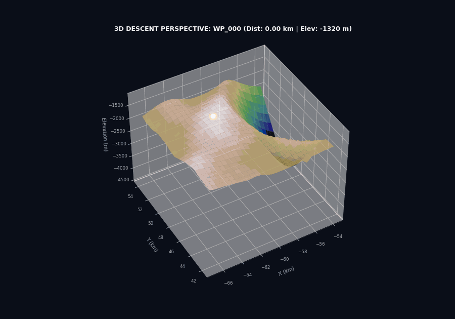
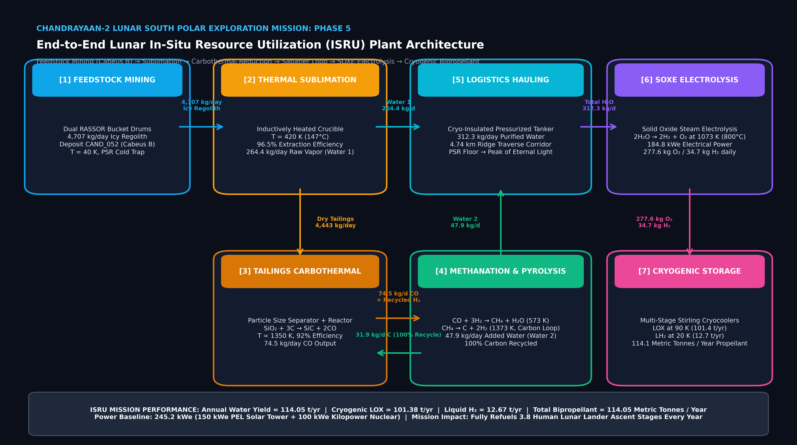

CHANDRAYAAN-2 LUNAR EXPLORATION MISSION
Interactive End-to-End Mission Architecture & Volatile Resource Harvesting
TEAM SHAURYAM
ISRO AITHON 2.0
Interactive End-to-End Mission Architecture & Volatile Resource Harvesting
| Instrument | Carrier Agency | Band / Sensor Type | Spatial Res | Primary Physical Purpose |
|---|---|---|---|---|
| DFSAR L-Band | ISRO Chandrayaan-2 | Polarimetric SAR (1.25 GHz) | 2.0 m / 80 m | Deep regolith radar penetration (up to 5 m) |
| DFSAR S-Band | ISRO Chandrayaan-2 | Polarimetric SAR (2.50 GHz) | 2.0 m / 80 m | Upper regolith scattering & CPR estimation |
| LOLA Topography | NASA LRO | Laser Altimeter (1064 nm) | 80 m / pixel | Digital Elevation Model (DEM), Slope & Roughness |
| OHRC Optical | ISRO Chandrayaan-2 | Visible Panchromatic Camera | 0.25 m / pixel | Meter-scale hazard & boulder density screening |

| Parameter | Authoritative Specification |
|---|---|
| Target Projection | Polar Stereographic (South Pole Centered) |
| Standard Latitude of Origin | -90.0° S |
| Central Reference Meridian | 0.0° E |
| Reference Spheroid | Moon 2015 Sphere (Radius = 1,737,400.0 m) |
| Grid Dimensions | 3,750 × 3,750 pixels (300 km × 300 km extent) |
| Speckle Filtering | Refined Lee Filter (7×7 kernel) to suppress SAR speckle |




| ID | Host Crater | Lat (°) | Lon (°) | Area (km²) | Median CPR | P(Ice) |
|---|---|---|---|---|---|---|
| CAND_052 | Cabeus B Floor | -87.5390 | -51.4439 | 0.192 | 1.490 | 81.6% |
| CAND_033 | Cabeus B Flank | -87.6887 | -42.1909 | 1.050 | 1.542 | 84.9% |
| CAND_016 | Haworth Crater | -87.4935 | -12.4055 | 1.651 | 1.498 | 83.2% |
| CAND_002 | Polar Highlands | -84.1551 | -50.6762 | 5.408 | 1.540 | 89.6% |
| CAND_038 | Cabeus B Flank | -87.6215 | -47.1446 | 4.294 | 1.515 | 86.4% |
| Rank | Site ID | Region | Slope | Dist to Ice | Illumination | LSI Score |
|---|---|---|---|---|---|---|
| #1 | LS_38 | Cabeus B Plateau | 2.17° | 2.83 km | 100.0% | 0.8845 |
| #2 | LS_44 | Cabeus B Plateau | 1.30° | 2.45 km | 78.3% | 0.8800 |
| #3 | LS_55 | de Gerlache Plateau | 0.99° | 3.88 km | 57.4% | 0.8597 |
| #4 | LS_57 | de Gerlache Plateau | 1.13° | 5.10 km | 60.6% | 0.8444 |
| #10 | LS_73 | Faustini Plateau | 2.31° | 7.56 km | 97.4% | 0.8096 |



| Parameter | Cabeus B Traverse (Novel) | Haworth Benchmark |
|---|---|---|
| Touchdown Site | LS_38 (Lat -87.3901°, Lon -51.6070°) | LS_16 (Haworth West Rim) |
| Target Ice Core | CAND_052 (Cabeus B Floor) | CAND_016 (Haworth Basin) |
| Total Drive Distance | 4.74 km (4,740 m) | 5.28 km (5,280 m) |
| Waypoint Count | 47 waypoints | 55 waypoints |
| Net Elevation Descent | -438.5 m (-1320m to -1758m) | -454.5 m (-1560m to -2014m) |
| Mean / Max Slope | 3.41° / 11.66° (Limit 15°) | 3.12° / 9.43° |
| Max Wheel Slip (Bekker) | 11.7% (Well below 22% limit) | 9.4% |
| Solar Illumination | 100% lit through WP_044 (4.58 km) | 100% lit through WP_051 |
| Battery SoC at Goal | 99.6% | 99.4% |

| Crater Region | Ice Area (km²) | Nominal Tonnage (Mt) | Volume (Mm³) |
|---|---|---|---|
| Cabeus B & Flank (Novel) | 10.10 km² | 20.35 Mt | 22.19 Mm³ |
| Haworth Crater | 9.46 km² | 19.06 Mt | 20.78 Mm³ |
| Shoemaker Crater | 10.95 km² | 22.06 Mt | 24.06 Mm³ |
| Faustini Flank | 0.42 km² | 0.84 Mt | 0.92 Mm³ |
| Total Polar Target Reserves | 30.93 km² | 52.55 Mt | 57.31 Mm³ |